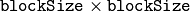
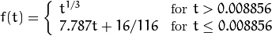
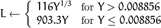
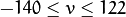
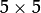
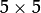
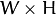
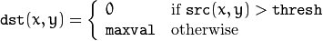

Miscellaneous Image Transformations¶
adaptiveThreshold¶
Applies an adaptive threshold to an array.
-
C++:
adaptiveThreshold(InputArray src, OutputArray dst, double maxValue, int adaptiveMethod, int thresholdType, int blockSize, double C)¶
-
Python:
cv2.adaptiveThreshold(src, maxValue, adaptiveMethod, thresholdType, blockSize, C[, dst]) → dst¶
-
C:
cvAdaptiveThreshold(const CvArr* src, CvArr* dst, double max_value, int adaptive_method=CV_ADAPTIVE_THRESH_MEAN_C, int threshold_type=CV_THRESH_BINARY, int block_size=3, double param1=5 )¶
-
Python:
cv.AdaptiveThreshold(src, dst, maxValue, adaptive_method=CV_ADAPTIVE_THRESH_MEAN_C, thresholdType=CV_THRESH_BINARY, blockSize=3, param1=5) → None¶ Parameters: - src – Source 8-bit single-channel image.
- dst – Destination image of the same size and the same type as
src. - maxValue – Non-zero value assigned to the pixels for which the condition is satisfied. See the details below.
- adaptiveMethod – Adaptive thresholding algorithm to use,
ADAPTIVE_THRESH_MEAN_CorADAPTIVE_THRESH_GAUSSIAN_C. See the details below. - thresholdType – Thresholding type that must be either
THRESH_BINARYorTHRESH_BINARY_INV. - blockSize – Size of a pixel neighborhood that is used to calculate a threshold value for the pixel: 3, 5, 7, and so on.
- C – Constant subtracted from the mean or weighted mean (see the details below). Normally, it is positive but may be zero or negative as well.
The function transforms a grayscale image to a binary image according to the formulae:
THRESH_BINARY
THRESH_BINARY_INV
where
 is a threshold calculated individually for each pixel.
is a threshold calculated individually for each pixel.
- For the method
ADAPTIVE_THRESH_MEAN_C, the threshold value is a mean of the
 neighborhood of
 minus
minus C. - For the method
ADAPTIVE_THRESH_GAUSSIAN_C, the threshold value is a weighted sum (cross-correlation with a Gaussian window) of the neighborhood of minus C. The default sigma (standard deviation) is used for the specifiedblockSize. SeegetGaussianKernel().
The function can process the image in-place.
See also
cvtColor¶
Converts an image from one color space to another.
-
C++:
cvtColor(InputArray src, OutputArray dst, int code, int dstCn=0 )¶
-
Python:
cv2.cvtColor(src, code[, dst[, dstCn]]) → dst¶
-
C:
cvCvtColor(const CvArr* src, CvArr* dst, int code)¶
-
Python:
cv.CvtColor(src, dst, code) → None¶ Parameters: - src – input image: 8-bit unsigned, 16-bit unsigned (
CV_16UC...), or single-precision floating-point. - dst – output image of the same size and depth as
src. - code – color space conversion code (see the description below).
- dstCn – number of channels in the destination image; if the parameter is 0, the number of the channels is derived automatically from
srcandcode.
- src – input image: 8-bit unsigned, 16-bit unsigned (
The function converts an input image from one color space to another. In case of a transformation to-from RGB color space, the order of the channels should be specified explicitly (RGB or BGR). Note that the default color format in OpenCV is often referred to as RGB but it is actually BGR (the bytes are reversed). So the first byte in a standard (24-bit) color image will be an 8-bit Blue component, the second byte will be Green, and the third byte will be Red. The fourth, fifth, and sixth bytes would then be the second pixel (Blue, then Green, then Red), and so on.
The conventional ranges for R, G, and B channel values are:
- 0 to 255 for
CV_8Uimages - 0 to 65535 for
CV_16Uimages - 0 to 1 for
CV_32Fimages
In case of linear transformations, the range does not matter.
But in case of a non-linear transformation, an input RGB image should be normalized to the proper value range to get the correct results, for example, for RGB
 L*u*v* transformation. For example, if you have a 32-bit floating-point image directly converted from an 8-bit image without any scaling, then it will have the 0..255 value range instead of 0..1 assumed by the function. So, before calling
L*u*v* transformation. For example, if you have a 32-bit floating-point image directly converted from an 8-bit image without any scaling, then it will have the 0..255 value range instead of 0..1 assumed by the function. So, before calling cvtColor , you need first to scale the image down:
img *= 1./255;
cvtColor(img, img, CV_BGR2Luv);
If you use cvtColor with 8-bit images, the conversion will have some information lost. For many applications, this will not be noticeable but it is recommended to use 32-bit images in applications that need the full range of colors or that convert an image before an operation and then convert back.
If conversion adds the alpha channel, its value will set to the maximum of corresponding channel range: 255 for CV_8U, 65535 for CV_16U, 1 for CV_32F.
The function can do the following transformations:
RGB GRAY (
CV_BGR2GRAY, CV_RGB2GRAY, CV_GRAY2BGR, CV_GRAY2RGB) Transformations within RGB space like adding/removing the alpha channel, reversing the channel order, conversion to/from 16-bit RGB color (R5:G6:B5 or R5:G5:B5), as well as conversion to/from grayscale using:and
The conversion from a RGB image to gray is done with:
cvtColor(src, bwsrc, CV_RGB2GRAY);
More advanced channel reordering can also be done with
mixChannels().RGB CIE XYZ.Rec 709 with D65 white point (
CV_BGR2XYZ, CV_RGB2XYZ, CV_XYZ2BGR, CV_XYZ2RGB):
 , and
cover the whole value range (in case of floating-point images,
may exceed 1).
, and
cover the whole value range (in case of floating-point images,
may exceed 1).RGB YCrCb JPEG (or YCC) (
CV_BGR2YCrCb, CV_RGB2YCrCb, CV_YCrCb2BGR, CV_YCrCb2RGB)
where
Y, Cr, and Cb cover the whole value range.
- RGB HSV (
CV_BGR2HSV, CV_RGB2HSV, CV_HSV2BGR, CV_HSV2RGB) In case of 8-bit and 16-bit images, R, G, and B are converted to the floating-point format and scaled to fit the 0 to 1 range.
If then . On output , , .
The values are then converted to the destination data type:
8-bit images
16-bit images (currently not supported)
- 32-bit images
H, S, and V are left as is
- RGB HSV (
- RGB HLS (
CV_BGR2HLS, CV_RGB2HLS, CV_HLS2BGR, CV_HLS2RGB). In case of 8-bit and 16-bit images, R, G, and B are converted to the floating-point format and scaled to fit the 0 to 1 range.

If then . On output , , .
The values are then converted to the destination data type:
8-bit images
16-bit images (currently not supported)
- 32-bit images
H, S, V are left as is
- RGB HLS (
- RGB CIE L*a*b* (
CV_BGR2Lab, CV_RGB2Lab, CV_Lab2BGR, CV_Lab2RGB). In case of 8-bit and 16-bit images, R, G, and B are converted to the floating-point format and scaled to fit the 0 to 1 range.
where

and
This outputs , , . The values are then converted to the destination data type:
8-bit images
- 16-bit images
(currently not supported)
- 32-bit images
L, a, and b are left as is
- RGB CIE L*a*b* (
- RGB CIE L*u*v* (
CV_BGR2Luv, CV_RGB2Luv, CV_Luv2BGR, CV_Luv2RGB). In case of 8-bit and 16-bit images, R, G, and B are converted to the floating-point format and scaled to fit 0 to 1 range.

This outputs , ,  .
The values are then converted to the destination data type:
8-bit images
- 16-bit images
(currently not supported)
- 32-bit images
L, u, and v are left as is
The above formulae for converting RGB to/from various color spaces have been taken from multiple sources on the web, primarily from the Charles Poynton site http://www.poynton.com/ColorFAQ.html
- RGB CIE L*u*v* (
Bayer
RGB ( CV_BayerBG2BGR, CV_BayerGB2BGR, CV_BayerRG2BGR, CV_BayerGR2BGR, CV_BayerBG2RGB, CV_BayerGB2RGB, CV_BayerRG2RGB, CV_BayerGR2RGB). The Bayer pattern is widely used in CCD and CMOS cameras. It enables you to get color pictures from a single plane where R,G, and B pixels (sensors of a particular component) are interleaved as follows:
The output RGB components of a pixel are interpolated from 1, 2, or 4 neighbors of the pixel having the same color. There are several modifications of the above pattern that can be achieved by shifting the pattern one pixel left and/or one pixel up. The two letters and in the conversion constants
CV_Bayer2BGRandCV_Bayer2RGBindicate the particular pattern type. These are components from the second row, second and third columns, respectively. For example, the above pattern has a very popular “BG” type.
distanceTransform¶
Calculates the distance to the closest zero pixel for each pixel of the source image.
-
C++:
distanceTransform(InputArray src, OutputArray dst, int distanceType, int maskSize)¶
-
C++:
distanceTransform(InputArray src, OutputArray dst, OutputArray labels, int distanceType, int maskSize, int labelType=DIST_LABEL_CCOMP )¶
-
Python:
cv2.distanceTransform(src, distanceType, maskSize[, dst]) → dst¶
-
C:
cvDistTransform(const CvArr* src, CvArr* dst, int distance_type=CV_DIST_L2, int mask_size=3, const float* mask=NULL, CvArr* labels=NULL, int labelType=CV_DIST_LABEL_CCOMP )¶
-
Python:
cv.DistTransform(src, dst, distance_type=CV_DIST_L2, mask_size=3, mask=None, labels=None) → None¶ Parameters: - src – 8-bit, single-channel (binary) source image.
- dst – Output image with calculated distances. It is a 32-bit floating-point, single-channel image of the same size as
src. - distanceType – Type of distance. It can be
CV_DIST_L1, CV_DIST_L2, orCV_DIST_C. - maskSize – Size of the distance transform mask. It can be 3, 5, or
CV_DIST_MASK_PRECISE(the latter option is only supported by the first function). In case of theCV_DIST_L1orCV_DIST_Cdistance type, the parameter is forced to 3 because a mask gives the same result as  or any larger aperture.
mask gives the same result as  or any larger aperture. - labels – Optional output 2D array of labels (the discrete Voronoi diagram). It has the type
CV_32SC1and the same size assrc. See the details below. - labelType – Type of the label array to build. If
labelType==DIST_LABEL_CCOMPthen each connected component of zeros insrc(as well as all the non-zero pixels closest to the connected component) will be assigned the same label. IflabelType==DIST_LABEL_PIXELthen each zero pixel (and all the non-zero pixels closest to it) gets its own label.
The functions distanceTransform calculate the approximate or precise
distance from every binary image pixel to the nearest zero pixel.
For zero image pixels, the distance will obviously be zero.
When maskSize == CV_DIST_MASK_PRECISE and distanceType == CV_DIST_L2 , the function runs the algorithm described in [Felzenszwalb04]. This algorithm is parallelized with the TBB library.
In other cases, the algorithm
[Borgefors86]
is used. This means that
for a pixel the function finds the shortest path to the nearest zero pixel
consisting of basic shifts: horizontal,
vertical, diagonal, or knight’s move (the latest is available for a
mask). The overall distance is calculated as a sum of these
basic distances. Since the distance function should be symmetric,
all of the horizontal and vertical shifts must have the same cost (denoted as a ), all the diagonal shifts must have the
same cost (denoted as b ), and all knight’s moves must have
the same cost (denoted as c ). For the CV_DIST_C and CV_DIST_L1 types, the distance is calculated precisely,
whereas for CV_DIST_L2 (Euclidean distance) the distance
can be calculated only with a relative error (a
mask
gives more accurate results). For a,``b`` , and c , OpenCV uses the values suggested in the original paper:
CV_DIST_C |
a = 1, b = 1 | |
|---|---|---|
CV_DIST_L1 |
a = 1, b = 2 | |
CV_DIST_L2 |
a=0.955, b=1.3693 | |
CV_DIST_L2 |
a=1, b=1.4, c=2.1969 |
Typically, for a fast, coarse distance estimation CV_DIST_L2, a
mask is used. For a more accurate distance estimation CV_DIST_L2 , a
mask or the precise algorithm is used.
Note that both the precise and the approximate algorithms are linear on the number of pixels.
The second variant of the function does not only compute the minimum distance for each pixel
but also identifies the nearest connected
component consisting of zero pixels (labelType==DIST_LABEL_CCOMP) or the nearest zero pixel (labelType==DIST_LABEL_PIXEL). Index of the component/pixel is stored in
.
When labelType==DIST_LABEL_CCOMP, the function automatically finds connected components of zero pixels in the input image and marks them with distinct labels. When labelType==DIST_LABEL_CCOMP, the function scans through the input image and marks all the zero pixels with distinct labels.
In this mode, the complexity is still linear.
That is, the function provides a very fast way to compute the Voronoi diagram for a binary image.
Currently, the second variant can use only the approximate distance transform algorithm, i.e. maskSize=CV_DIST_MASK_PRECISE is not supported yet.
Note
- An example on using the distance transform can be found at opencv_source_code/samples/cpp/distrans.cpp
- (Python) An example on using the distance transform can be found at opencv_source/samples/python2/distrans.py
floodFill¶
Fills a connected component with the given color.
-
C++:
floodFill(InputOutputArray image, Point seedPoint, Scalar newVal, Rect* rect=0, Scalar loDiff=Scalar(), Scalar upDiff=Scalar(), int flags=4 )¶
-
C++:
floodFill(InputOutputArray image, InputOutputArray mask, Point seedPoint, Scalar newVal, Rect* rect=0, Scalar loDiff=Scalar(), Scalar upDiff=Scalar(), int flags=4 )¶
-
Python:
cv2.floodFill(image, mask, seedPoint, newVal[, loDiff[, upDiff[, flags]]]) → retval, rect¶
-
C:
cvFloodFill(CvArr* image, CvPoint seed_point, CvScalar new_val, CvScalar lo_diff=cvScalarAll(0), CvScalar up_diff=cvScalarAll(0), CvConnectedComp* comp=NULL, int flags=4, CvArr* mask=NULL )¶
-
Python:
cv.FloodFill(image, seed_point, new_val, lo_diff=(0, 0, 0, 0), up_diff=(0, 0, 0, 0), flags=4, mask=None) → comp¶ Parameters: - image – Input/output 1- or 3-channel, 8-bit, or floating-point image. It is modified by the function unless the
FLOODFILL_MASK_ONLYflag is set in the second variant of the function. See the details below. - mask –
Operation mask that should be a single-channel 8-bit image, 2 pixels wider and 2 pixels taller than
image. Since this is both an input and output parameter, you must take responsibility of initializing it. Flood-filling cannot go across non-zero pixels in the input mask. For example, an edge detector output can be used as a mask to stop filling at edges. On output, pixels in the mask corresponding to filled pixels in the image are set to 1 or to the a value specified inflagsas described below. It is therefore possible to use the same mask in multiple calls to the function to make sure the filled areas do not overlap.Note
Since the mask is larger than the filled image, a pixel
in imagecorresponds to the pixel in themask. - seedPoint – Starting point.
- newVal – New value of the repainted domain pixels.
- loDiff – Maximal lower brightness/color difference between the currently observed pixel and one of its neighbors belonging to the component, or a seed pixel being added to the component.
- upDiff – Maximal upper brightness/color difference between the currently observed pixel and one of its neighbors belonging to the component, or a seed pixel being added to the component.
- rect – Optional output parameter set by the function to the minimum bounding rectangle of the repainted domain.
- flags –
Operation flags. The first 8 bits contain a connectivity value. The default value of 4 means that only the four nearest neighbor pixels (those that share an edge) are considered. A connectivity value of 8 means that the eight nearest neighbor pixels (those that share a corner) will be considered. The next 8 bits (8-16) contain a value between 1 and 255 with which to fill the
mask(the default value is 1). For example,4 | ( 255 << 8 )will consider 4 nearest neighbours and fill the mask with a value of 255. The following additional options occupy higher bits and therefore may be further combined with the connectivity and mask fill values using bit-wise or (|):- FLOODFILL_FIXED_RANGE If set, the difference between the current pixel and seed pixel is considered. Otherwise, the difference between neighbor pixels is considered (that is, the range is floating).
- FLOODFILL_MASK_ONLY If set, the function does not change the image (
newValis ignored), and only fills the mask with the value specified in bits 8-16 offlagsas described above. This option only make sense in function variants that have themaskparameter.
- image – Input/output 1- or 3-channel, 8-bit, or floating-point image. It is modified by the function unless the
The functions floodFill fill a connected component starting from the seed point with the specified color. The connectivity is determined by the color/brightness closeness of the neighbor pixels. The pixel at
 is considered to belong to the repainted domain if:
is considered to belong to the repainted domain if:
in case of a grayscale image and floating range
in case of a grayscale image and fixed range
and
in case of a color image and floating range
and
in case of a color image and fixed range
where is the value of one of pixel neighbors that is already known to belong to the component. That is, to be added to the connected component, a color/brightness of the pixel should be close enough to:
- Color/brightness of one of its neighbors that already belong to the connected component in case of a floating range.
- Color/brightness of the seed point in case of a fixed range.
Use these functions to either mark a connected component with the specified color in-place, or build a mask and then extract the contour, or copy the region to another image, and so on.
See also
Note
- An example using the FloodFill technique can be found at opencv_source_code/samples/cpp/ffilldemo.cpp
- (Python) An example using the FloodFill technique can be found at opencv_source_code/samples/python2/floodfill.cpp
integral¶
Calculates the integral of an image.
-
C++:
integral(InputArray src, OutputArray sum, int sdepth=-1 )¶
-
C++:
integral(InputArray src, OutputArray sum, OutputArray sqsum, int sdepth=-1 )¶
-
C++:
integral(InputArray src, OutputArray sum, OutputArray sqsum, OutputArray tilted, int sdepth=-1 )¶
-
Python:
cv2.integral(src[, sum[, sdepth]]) → sum¶
-
Python:
cv2.integral2(src[, sum[, sqsum[, sdepth]]]) → sum, sqsum¶
-
Python:
cv2.integral3(src[, sum[, sqsum[, tilted[, sdepth]]]]) → sum, sqsum, tilted¶
-
C:
cvIntegral(const CvArr* image, CvArr* sum, CvArr* sqsum=NULL, CvArr* tilted_sum=NULL )¶
-
Python:
cv.Integral(image, sum, sqsum=None, tiltedSum=None) → None¶ Parameters: - image – input image as , 8-bit or floating-point (32f or 64f).
- sum – integral image as , 32-bit integer or floating-point (32f or 64f).
- sqsum – integral image for squared pixel values; it is , double-precision floating-point (64f) array.
- tilted – integral for the image rotated by 45 degrees; it is array with the same data type as
sum. - sdepth – desired depth of the integral and the tilted integral images,
CV_32S,CV_32F, orCV_64F.
The functions calculate one or more integral images for the source image as follows:

Using these integral images, you can calculate sum, mean, and standard deviation over a specific up-right or rotated rectangular region of the image in a constant time, for example:
It makes possible to do a fast blurring or fast block correlation with a variable window size, for example. In case of multi-channel images, sums for each channel are accumulated independently.
As a practical example, the next figure shows the calculation of the integral of a straight rectangle Rect(3,3,3,2) and of a tilted rectangle Rect(5,1,2,3) . The selected pixels in the original image are shown, as well as the relative pixels in the integral images sum and tilted .

threshold¶
Applies a fixed-level threshold to each array element.
-
C++:
threshold(InputArray src, OutputArray dst, double thresh, double maxval, int type)¶
-
Python:
cv2.threshold(src, thresh, maxval, type[, dst]) → retval, dst¶
-
C:
cvThreshold(const CvArr* src, CvArr* dst, double threshold, double max_value, int threshold_type)¶
-
Python:
cv.Threshold(src, dst, threshold, maxValue, thresholdType) → None¶ Parameters: - src – input array (single-channel, 8-bit or 32-bit floating point).
- dst – output array of the same size and type as
src. - thresh – threshold value.
- maxval – maximum value to use with the
THRESH_BINARYandTHRESH_BINARY_INVthresholding types. - type – thresholding type (see the details below).
The function applies fixed-level thresholding
to a single-channel array. The function is typically used to get a
bi-level (binary) image out of a grayscale image (
compare() could
be also used for this purpose) or for removing a noise, that is, filtering
out pixels with too small or too large values. There are several
types of thresholding supported by the function. They are determined by type :
THRESH_BINARY
THRESH_BINARY_INV

THRESH_TRUNC
THRESH_TOZERO
THRESH_TOZERO_INV


Also, the special value THRESH_OTSU may be combined with
one of the above values. In this case, the function determines the optimal threshold
value using the Otsu’s algorithm and uses it instead of the specified thresh .
The function returns the computed threshold value.
Currently, the Otsu’s method is implemented only for 8-bit images.

See also
adaptiveThreshold(),
findContours(),
compare(),
min(),
max()
watershed¶
Performs a marker-based image segmentation using the watershed algorithm.
-
C++:
watershed(InputArray image, InputOutputArray markers)¶
-
C:
cvWatershed(const CvArr* image, CvArr* markers)¶
-
Python:
cv2.watershed(image, markers) → None¶ Parameters: - image – Input 8-bit 3-channel image.
- markers – Input/output 32-bit single-channel image (map) of markers. It should have the same size as
image.
The function implements one of the variants of watershed, non-parametric marker-based segmentation algorithm, described in [Meyer92].
Before passing the image to the function, you have to roughly outline the desired regions in the image markers with positive (>0) indices. So, every region is represented as one or more connected components with the pixel values 1, 2, 3, and so on. Such markers can be retrieved from a binary mask using findContours() and drawContours() (see the watershed.cpp demo). The markers are “seeds” of the future image regions. All the other pixels in markers , whose relation to the outlined regions is not known and should be defined by the algorithm, should be set to 0’s. In the function output, each pixel in markers is set to a value of the “seed” components or to -1 at boundaries between the regions.
Visual demonstration and usage example of the function can be found in the OpenCV samples directory (see the watershed.cpp demo).
Note
Any two neighbor connected components are not necessarily separated by a watershed boundary (-1’s pixels); for example, they can touch each other in the initial marker image passed to the function.
See also
Note
- An example using the watershed algorithm can be found at opencv_source_code/samples/cpp/watershed.cpp
- (Python) An example using the watershed algorithm can be found at opencv_source_code/samples/python2/watershed.py
grabCut¶
Runs the GrabCut algorithm.
-
C++:
grabCut(InputArray img, InputOutputArray mask, Rect rect, InputOutputArray bgdModel, InputOutputArray fgdModel, int iterCount, int mode=GC_EVAL )¶
-
Python:
cv2.grabCut(img, mask, rect, bgdModel, fgdModel, iterCount[, mode]) → None¶ Parameters: - img – Input 8-bit 3-channel image.
- mask –
Input/output 8-bit single-channel mask. The mask is initialized by the function when
modeis set toGC_INIT_WITH_RECT. Its elements may have one of following values:- GC_BGD defines an obvious background pixels.
- GC_FGD defines an obvious foreground (object) pixel.
- GC_PR_BGD defines a possible background pixel.
- GC_PR_FGD defines a possible foreground pixel.
- rect – ROI containing a segmented object. The pixels outside of the ROI are marked as “obvious background”. The parameter is only used when
mode==GC_INIT_WITH_RECT. - bgdModel – Temporary array for the background model. Do not modify it while you are processing the same image.
- fgdModel – Temporary arrays for the foreground model. Do not modify it while you are processing the same image.
- iterCount – Number of iterations the algorithm should make before returning the result. Note that the result can be refined with further calls with
mode==GC_INIT_WITH_MASKormode==GC_EVAL. - mode –
Operation mode that could be one of the following:
- GC_INIT_WITH_RECT The function initializes the state and the mask using the provided rectangle. After that it runs
iterCountiterations of the algorithm. - GC_INIT_WITH_MASK The function initializes the state using the provided mask. Note that
GC_INIT_WITH_RECTandGC_INIT_WITH_MASKcan be combined. Then, all the pixels outside of the ROI are automatically initialized withGC_BGD. - GC_EVAL The value means that the algorithm should just resume.
- GC_INIT_WITH_RECT The function initializes the state and the mask using the provided rectangle. After that it runs
The function implements the GrabCut image segmentation algorithm.
See the sample grabcut.cpp to learn how to use the function.
| [Borgefors86] | Borgefors, Gunilla, Distance transformations in digital images. Comput. Vision Graph. Image Process. 34 3, pp 344–371 (1986) |
| [Felzenszwalb04] | Felzenszwalb, Pedro F. and Huttenlocher, Daniel P. Distance Transforms of Sampled Functions, TR2004-1963, TR2004-1963 (2004) |
| [Meyer92] | Meyer, F. Color Image Segmentation, ICIP92, 1992 |
| [Telea04] | Alexandru Telea, An Image Inpainting Technique Based on the Fast Marching Method. Journal of Graphics, GPU, and Game Tools 9 1, pp 23-34 (2004) |
Note
- An example using the GrabCut algorithm can be found at opencv_source_code/samples/cpp/grabcut.cpp
- (Python) An example using the GrabCut algorithm can be found at opencv_source_code/samples/python2/grabcut.py
Help and Feedback
You did not find what you were looking for?- Ask a question on the Q&A forum.
- If you think something is missing or wrong in the documentation, please file a bug report.

Table Of Contents
Previous topic
Geometric Image Transformations